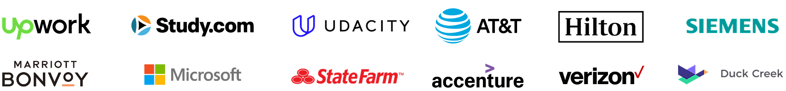
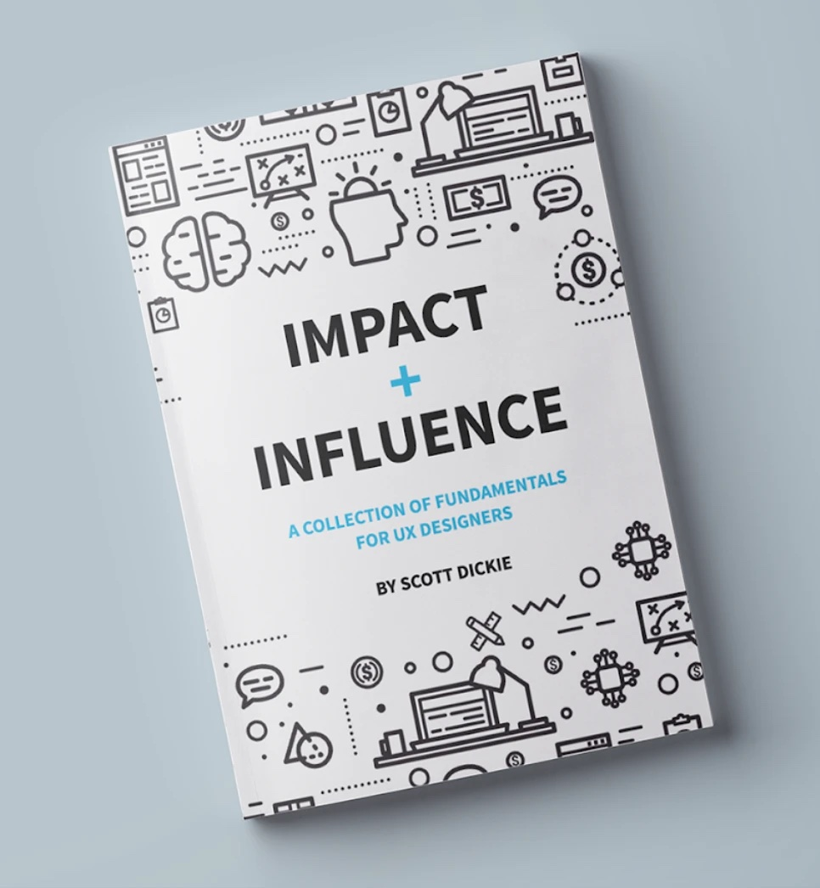
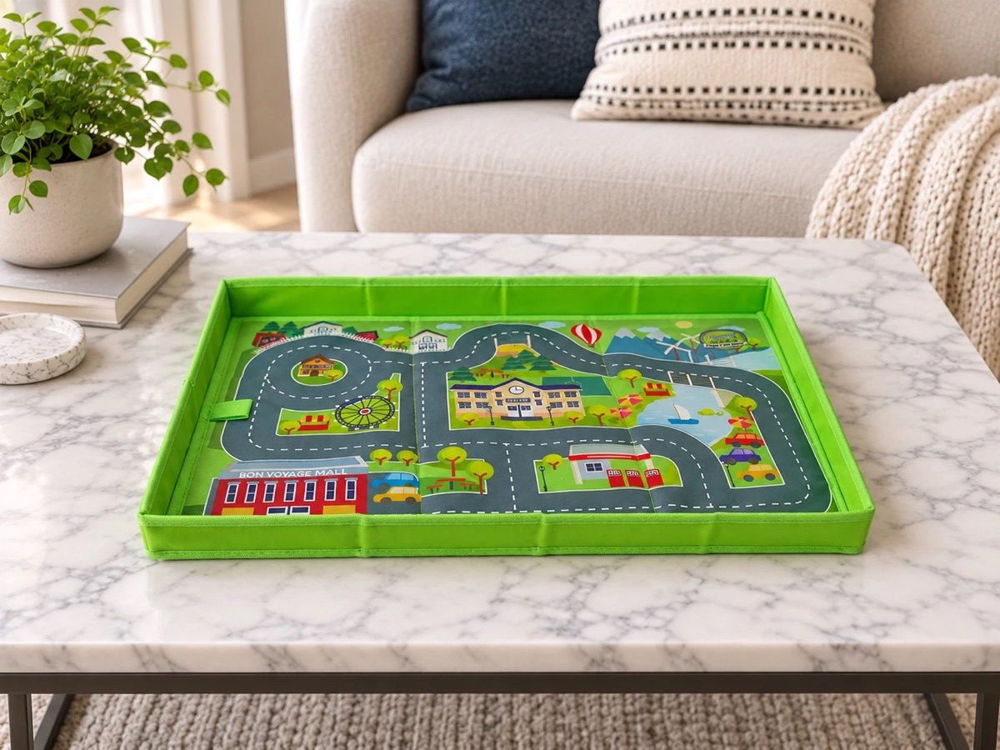
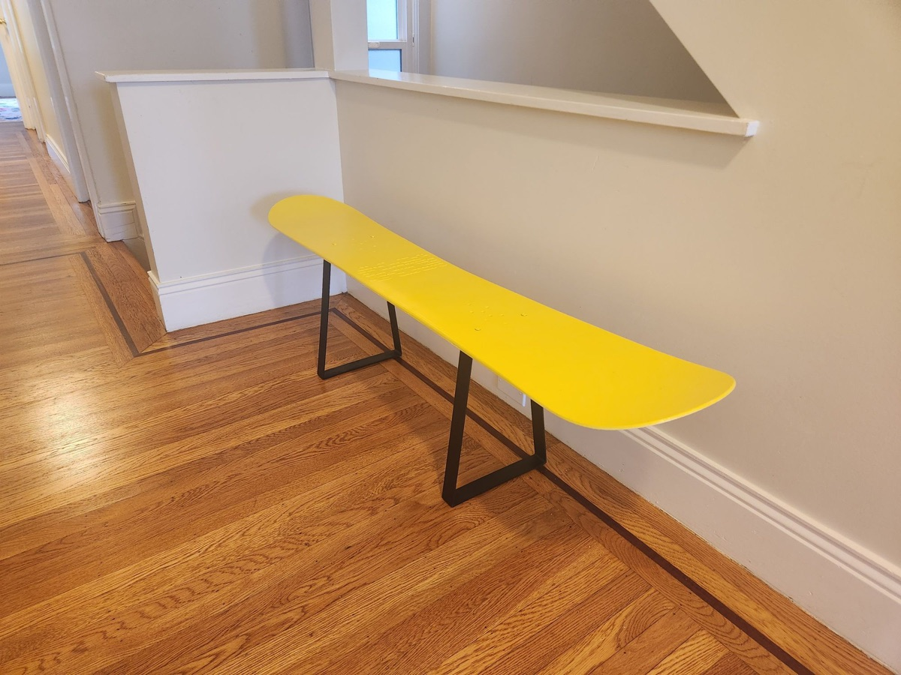
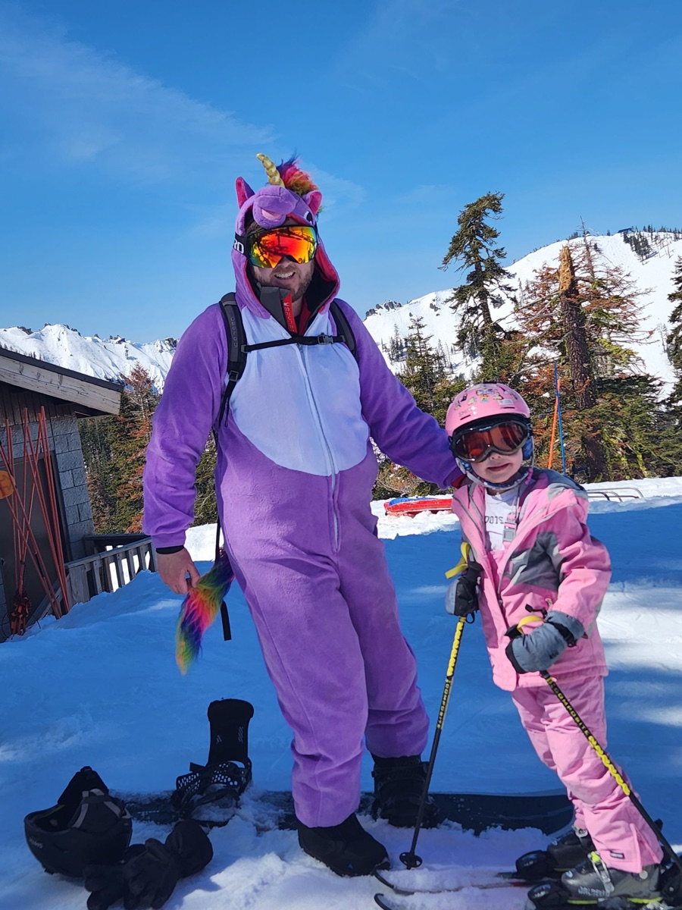
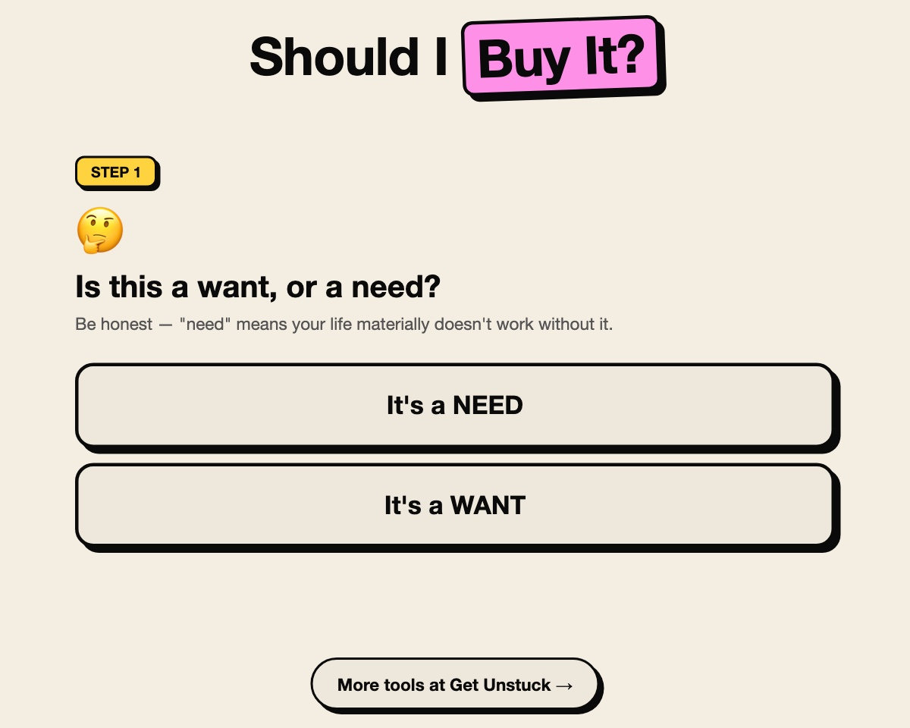
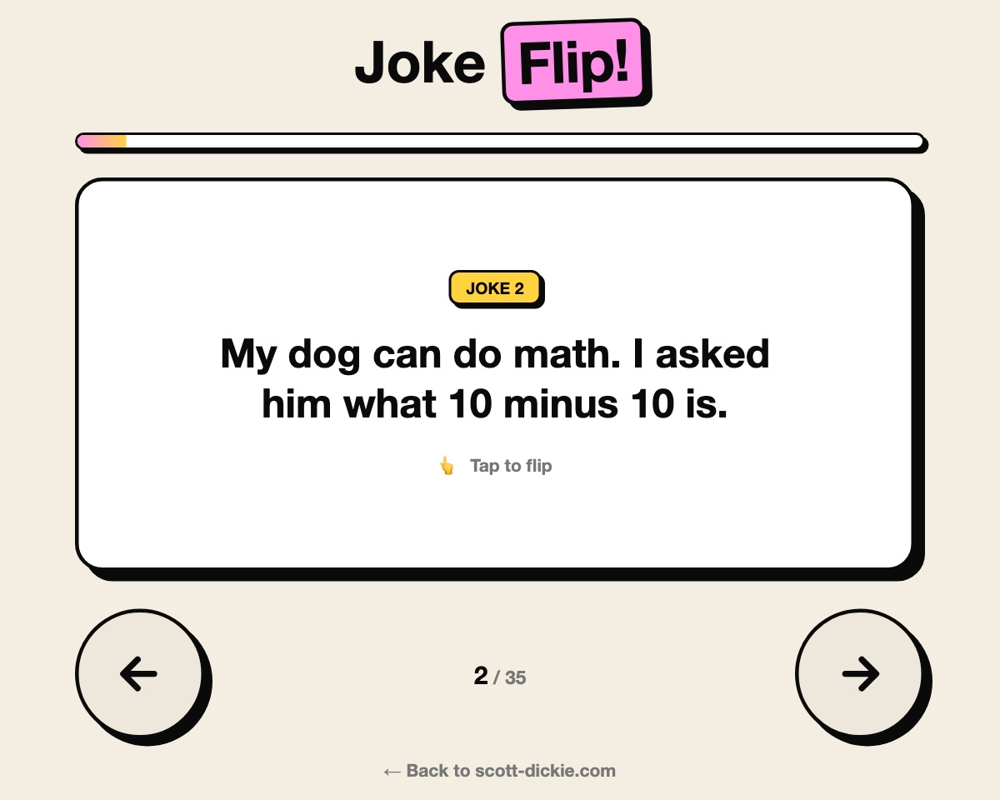

01 / Music
Music Songwriting & Production
I write lyrics and compose music across several genres and use Suno, eMastered and FL Studio to produce and master my music.
Full-stack design leader. Hands on with AI and new products.
I’m a curious full-stack design leader with B2C & B2B SaaS, marketplace and ed-tech experience. I have shipped industry defining products that have delighted customers and led to VC funding, IPOs, and acquisitions. I enjoy leading teams and being hands on with AI and new products. Learn more about my leadership principles.
Designed for

Curious by default. I make things with pixels, prompts and sound.
I’m happiest when I’m making something new. On nights and weekends I experiment with AI, ship small side projects and produce music. Most ideas start as a quick prototype with an AI tool and wander somewhere I didn’t expect, which is half the fun. This portrait is one of those experiments: it’s drawn entirely in characters, and it reacts to you. Go on, poke it.
Currently playing with
[02]
I’ve led design from 0-1 launches to IPOs and acquisitions, across B2C & B2B SaaS, marketplaces and ed-tech, at companies that reach millions of people.
01 / Music
I write lyrics and compose music across several genres and use Suno, eMastered and FL Studio to produce and master my music.
02 / unstuck.services
An AI powered service to help people through tough decisions. Using trusted frameworks from leading thinkers, generative UI and interactive exercises, we get decisions made in under an hour.
Visit unstuck.services ↗[03]
A book, a toy, a bench, a little wizard, a pile of jokes and a very good day on the mountain. The things I make (and do) when nobody’s asking.

Impact & InfluenceHelping designers learn non-design skills
GoTracksTravel toy for kids
Snowboard benchHomemade bench made from a snowboard and metal legs
SnowboardingMy favorite sport, celebrating the season’s last day in the onesie
Should I Buy It? ↗A 14-question gut check before you buy something
Joke Flip ↗Dad jokes for kidsI’ve been making things for as long as I can remember. The tools keep changing; the feeling doesn’t.
I made things and sold them to my friends at school, and built a mini golf course on our front lawn for the neighborhood kids to play. My first taste of building something people actually wanted.
I started my own development and design studio while I was in college.
A travel toy I created for my son, so the fun could come along on every trip.
I’m having so much fun, learning faster and making more than ever.
[03]
Right now, I lead Design, Research & Brand at Study.com helping 30 million weekly learners achieve their goals with AI-native, interactive learning.
My teams of designers, researchers and creatives have launched a new app, design system and brand in the last year. I lead the company’s AI Steering Committee, helping all employees adopt AI into their daily work and develop tools to enable scale and quality. My day to day involves guiding vision, co-creating product strategy and identifying growth and marketing opportunities, personally shipping features and meeting with our customers.
I’ve helped shape design at companies that define industries and reach millions of people. At Upwork, I scaled design team through rapid growth to build two 0-1 products, helping position the company for its IPO. At Udacity, I introduced gamification, AI and pivoted to B2C D2C and led a B2B platform to scale to orgs, a journey that ultimately led to its acquisition by Accenture. At Comfy, I drove design, research, and product strategy from 0 to 1, shaping a vision that secured $10M in funding from Siemens as the first B2C product in this division. Along the way, I’ve also worked with global leaders designing products at B2B, eCommerce and hospitality companies, including designed the mobile app at State Farm and AT&T eCommerce. While at Accenture, I led the San Francisco design studio and was responsible for multiple client projects.
My teams are lean, AI-powered and high in craft. I thrive on curiosity and creativity, and can shift from executive discussions to hands on in Figma and AI tools to ship. Over my career, I’ve also led product management teams, founded companies, and built ventures of my own.
During nights and weekends, I ship personal projects, experiment with AI, and produce music. I’ve built products like AskMentra (an AI-powered resume and cover letter assistant), a synthetic user community for early feedback and reactions, SendPerks (affiliate marketing for indie creators and AI builders), DirectHire.club (a marketplace connecting job seekers with trusted referrers). These ventures keep me hands-on, help me test ideas fast, and bring back insights that make me a stronger leader in my day-to-day work.